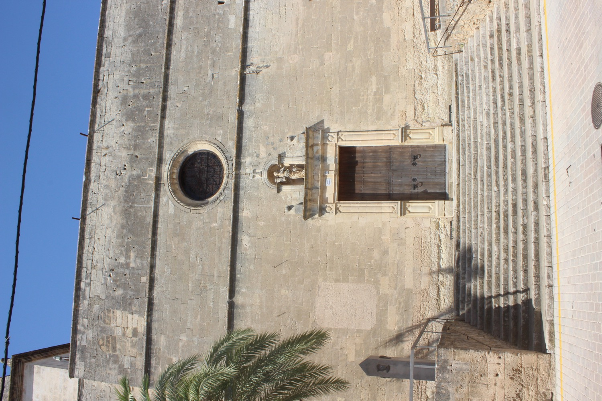

Amb el creixement de la població de Vilafranca, el temple es va anar quedant petit. Cap a l'any 1700 es començà la construcció d'una església més gran a partir de la primera. El nou temple es construí en estil barroc i amb l'estructura de moltes de les esglésies mallorquines del segle XVII: una nau única coberta amb una volta de canó, capelles als dos costats de la nau i una rosassa a la façana principal. L'església feia 35 m de llarg, 17 m d'ample i 16 m d'alçada, i tenia cinc capelles a cada costat i dos portals: el principal, o “de les dones”, i el lateral, o “dels homes”. El buc de l'església s'acabà l'any 1738, i la façana el 1741.
Un dels principals impulsors de l'església nova va ser el canonge Domingo Sureda, fill del senyor de Sant Martí i que arribà a rector de la Universitat Luliana i Vicari General de la diòcesi. Entre altres coses, donà a l'església de Vilafranca una relíquia de la Vera Creu que arrabassà de la que es conserva a la Seu.
Al voltant del 1775 s'encarregaren el retaule major i el sagrari monumental a l'escultor Mateu Colom, assessorat per Jeroni Bestard, amic del marquès de Sant Martí i artista de gran prestigi a Mallorca. Bestard volia que el retaule fos neoclàssic, però Colom el construí barroc, que encara era la moda. A Bestard no li agradà i arran d'una visita comentà: “tuve el desconsuelo de verlo alborotado por las quiméricas ideas del artífice que lo construyó”. El retaule de Colom és la part central de l'actual retaule major.
Naturalment, com en tota casa, les obres continuaren més enllà de l'acabament de l'obra principal. Així, per exemple: